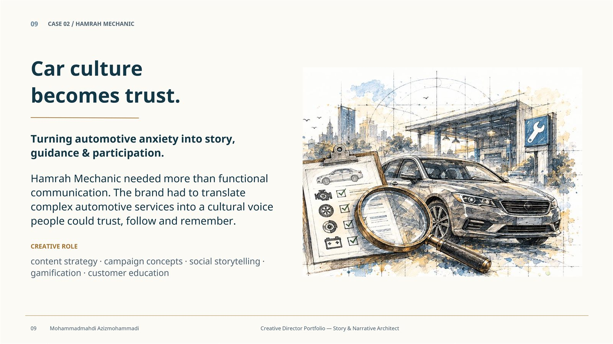
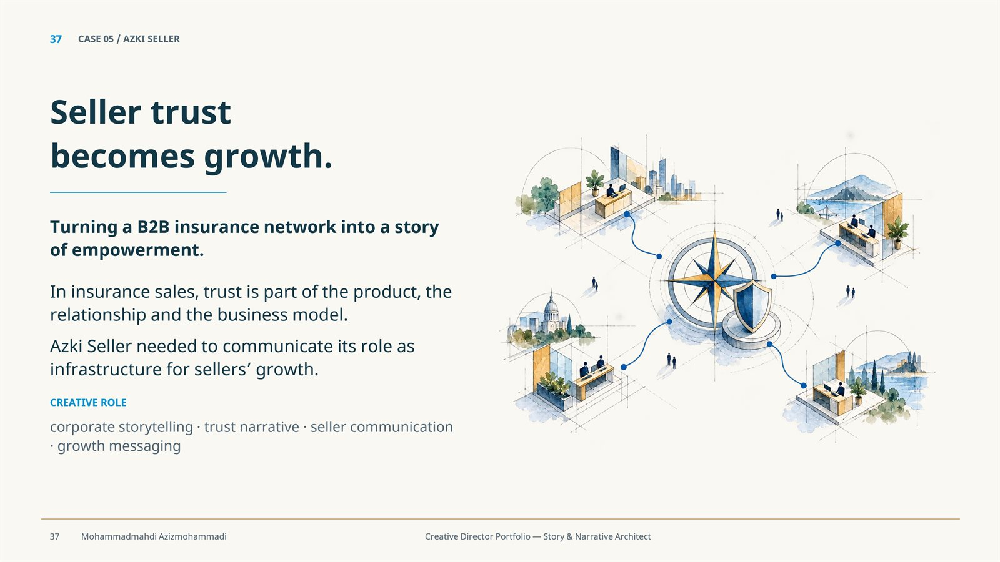
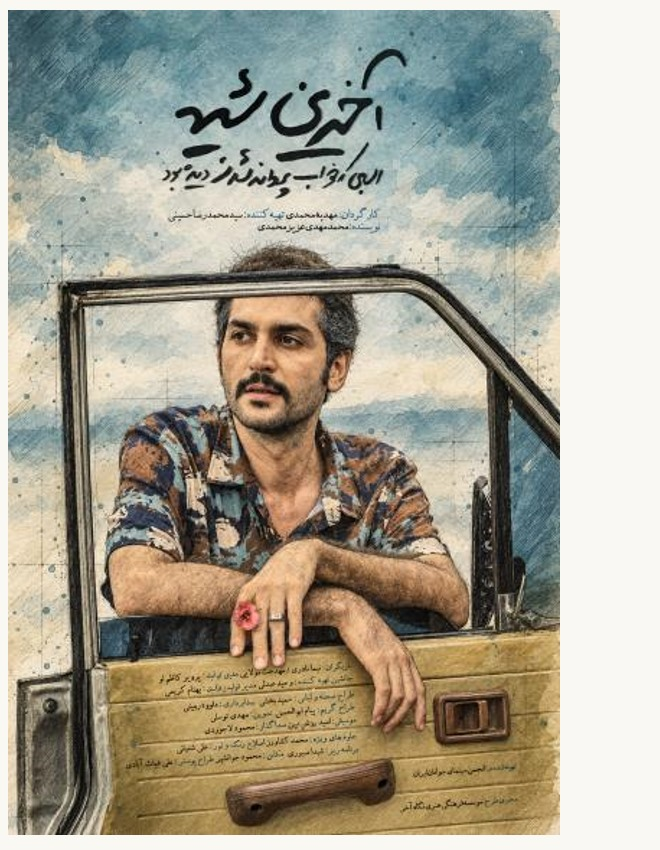
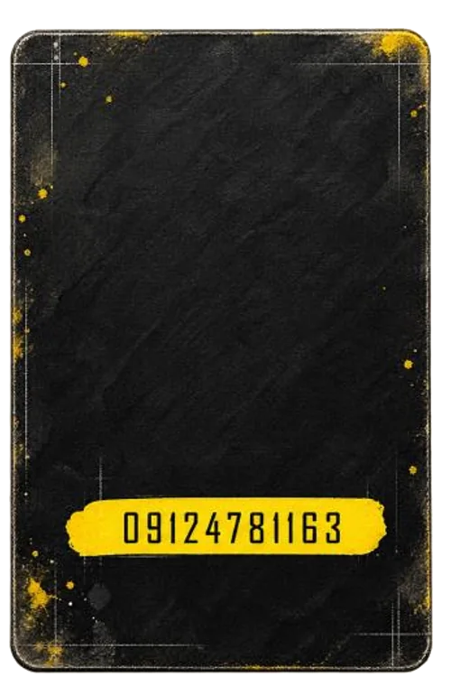

۰۱
۰۱
خانومی
زیبایی جهانی میشود.
تبدیل کشف زیبایی به داستان، بازی و پاخور فروشگاهی. فالگیر نوستراژاموس، معماری مسیر تعامل مخاطب و فانتزی چمدان صورتی.
ورود به صفحه اختصاصی جهان ۰۱
←
معماری داستانها، شهود انسانی و تجربههای برند.
«من جهانهایی را معماری میکنم که داستان برندها بتواند در آن رخ دهد.»

با بوی باران روی خاک، نغمهٔ کمانچهٔ کلهر، تلخی قهوه و یک خودکار بیک آبی. در لمس دستان مادر. خندهٔ پدر. رفقایی که بوی خانه میدهند. سینما همیشه در جانم میماند: آخرین هدیهٔ آلفردو، اشکهای جان کافی، ایمان جان کیتینگ به صدا. من بارها به شعر بازمیگردم و به لحظاتی در گلوگیر احساس که حتی حین رخ دادنشان، میدانم دلتنگشان خواهم شد.
اینها چیزی است که با خود نگه میدارم…
و اینجاست که داستانهایم آغاز میشوند…

من هر برند را جهانی در حال ساخت میبینم. کار من یافتن حقیقت انسانی، طراحی قلمرو خلاق، ساخت سامانه داستانی و تبدیل آن به تجربهای است که آدمها بتوانند با تمام وجود حسش کنند، به خاطر بسپارند و در آن مشارکت جویند. طراحی کانسپت و گیمیفیکیشن، داستانهای برند را به تجربههایی بدل میکنند که انسانها با میل خود وارد آن میشوند.
کشف حقیقتهای نهفته، اضطرابهای ناگفته و اشتیاقهای اصیلی که رفتار واقعی انسانها را جهت میدهد.
شناسایی اصطکاک میان باورهای سنتی، تغییرات نسلی و عادتهای روزمره که توجه جامعه را برمیانگیزد.
خلق یک زیستبوم متمایز، خیالانگیز و معتبر که برند با صدای منحصربهفرد خودش صاحب آن میشود.
معماری نقاط تماس، آیینهای معنادار و مکانیکهای بازیوار که مخاطب مایل به بازگشت و ماندگاری در آن است.
مفاهیم خلاق، معماری روایت و گیمیفیکیشن در پیوند میان برندها، فضاهای دیجیتال و آیینهای روزمره. برای مطالعه کامل هر پروژه، روی کارت آن کلیک فرمایید تا وارد صفحه فرود اختصاصی آن شوید.
۰۱
زیبایی جهانی میشود.
تبدیل کشف زیبایی به داستان، بازی و پاخور فروشگاهی. فالگیر نوستراژاموس، معماری مسیر تعامل مخاطب و فانتزی چمدان صورتی.

۰۲فرهنگ خودرو به اعتماد بدل میشود.
تبدیل اضطراب خودرو به داستان، راهنمایی و مشارکت. کمپین «تولدت مبارک پیکان»، شواهد عینی کارشناسی و گیمیفیکیشن مسیر معامله.
 ۰۳
۰۳
عاطفه به مشارکت بدل میشود.
تبدیل خاطره، ترانه هایده، نوستالژی فقدان و خریدهای روزمره به جنبش برند. پاخور فروشگاهی افق کوروش و شعرخوانی محیط کار.
 ۰۴
۰۴
سلامت، انسانی میشود.
بازآفرینی جامع برند در ستایش زندگی. کتابچه لحن ۶۴ صفحهای، بازطراحی ۹ وبسایت، مرهم پر سیمرغ و درخت همنهال نوزادان در چیتگر.

۰۵روابط B2B به توانمندسازی بدل میشود.
تبدیل ابزار فروش به هویت و غرور حرفهای نمایندگان. همایش بزرگ «با همیم» در سالن برج میلاد، سرایش ترانه اختصاصی و آیینهای تعلق سازمانی.
 ۰۶
۰۶
بازی به شوق و مقصود بدل میشود.
مفاهیمی که کارهای روزمره را به انگیزه داوطلبانه تبدیل میکنند: پروانههای تهران، آینه رفتار اجتماعی، رِند و سامانه سلامت قلب همقلب.
 ۰۷
۰۷
خیالپردازی به رفاقت بدل میشود.
خلق کاراکتر سامفی و جهان داستانی کودک برای غلبه بر ترسهای شبانه و رشد عاطفی در پیوند با والدین و کتابهای تعاملی.
 ۰۸
۰۸
فرهنگ به آیینی زنده بدل میشود.
مناسک کاری برای ساخت جامعهای سرشار از همبستگی: ویتامین CC آیوین، شنونده شب، تماس خوشحال و تبدیل فشار کاری به خنده و همدلی.
 ۰۹
۰۹
فصل تجربه کارآفرینی و ساخت آژانس.
دو سال تجربه تاسیس و هدایت آژانس نورومارکتینگ؛ پیوند علوم اعصاب با جاهطلبی خلاق و درسهای ماندگار یک شکست مقدس برای ساختار ایدهها.
نویسندگی و کارگردانی فیلمهای سینمایی و سریالهای پلتفرم؛ ریشه و پشتوانهٔ اصلی من در درک اشتیاق انسان، موانع، اوجگیری کشمکش و پایانبندیهایی که در جان مخاطب ماندگار میشوند.
«من مهندسی درام سینما را وارد جهان برندها میکنم؛ جایی که مخاطب نه مشتری، بلکه تماشاگر مشتاق یک قصه اصیل است.»




شاکله فکری که جهانهای داستانی را به سامانههای عملیاتی منسجم تبدیل میکند.
سرپرستی اتاقهای فکر، معماری هویت کلامی، کمپینهای یکپارچه ۳۶۰ درجه و فعالسازی فضاهای تجاری برای برترین برندهای فناوری و خدمات کشور.
سرپرست نویسندگان سریالهای درام پلتفرمهای نمایش خانگی، نگارش فیلمهای سینمایی تحسینشده در فستیوالها، شناخت مویرگی کشمکش و روانشناسی مخاطب.
طراحی سامانههای بازیوار، هدایت سفر مشتری در نقاط تماس فیزیکی و دیجیتال، و خلق کاراکترهای ملموس برای ارتباط پایدار با برند.
داستانها، کمپینها، تجربههای برند.


این یادداشت کوتاه را بفرستید یا مستقیماً تماس بگیرید.